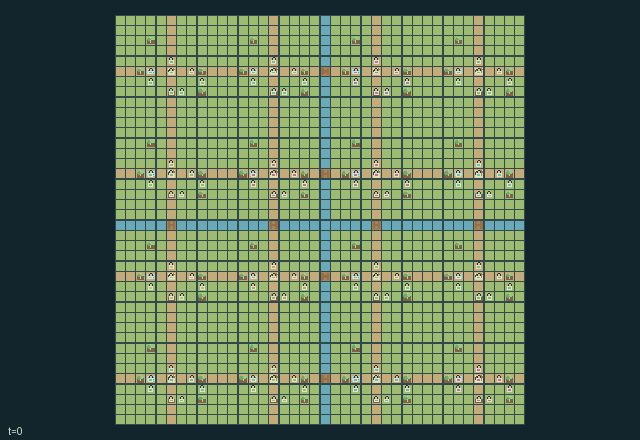

GI227 · Forest Frontier Commons

Build and provision sixteen settlements while maintaining renewable woodland, crops, water and safe shared routes; trade local production against transport access and neighboring ecological costs.
Identity and original contract
128 independently actionable roles; 26 discrete commands per role; 321 native observation columns per role; original horizon 896 steps. Declared per-step reward range: -1.0 to 4.0. Observation regime: partially_observable.
Source SHA-256: 0dfe87d714ef6907e0e2fb30b8ed07b5357e832698e91cffc491441ec42ced06
The objective, rewards, population, map and horizon remain original. A preview is not a success claim.
Objective and gameplay
Build and provision sixteen settlements while maintaining renewable woodland, crops, water and safe shared routes; trade local production against transport access and neighboring ecological costs.
Cutting mature trees opens pack routes but changes delayed regrowth, local well recharge and fire exposure. Loaded NPC pack animals traverse shared trails and bridges. Equipment exchange, carried goods, shared aquifer flow, rescue, village upgrades and finite trade commissions create partner-dependent choices.
- Control any of128 settlers through the same native action interface. The16 pack animals are separate NPC objects.
- Walk on grass or trails and cross streams at usable bridges. Grass spends stamina; resting recovers it. Mature tree stage3 blocks passage.
- Chop with an axe to obtain timber and open a route. Living cut trees regrow after eligible24-turn periods; bare stumps require replanting.
- Mature neighboring woodland supports well recharge. Wells exchange water west-to-east along village rows, so local withdrawals can affect neighbors.
- Buckets fill at wells, irrigate crops or extinguish trees. Hoes tend and seed crops. Exchange tools with a waiting neighbor to change work capability.
- Shared trails carry loaded pack animals one cell per turn. Trees, broken bridges, other animals and settlers can block them; village docks allow co-location.
- Timber and food remain in inventories, stores or moving shipments. Only finite matching trade orders pay shipment commissions.
- Dry woodland can ignite and spread fire eastward. Fire consumes trees and damages nearby crops; smoke drains stamina and can injure settlers.
- Firebreaks stop growth and fire at that tree site; replanting reverses them. Injured neighbors can be aided with carried food or water.
- Work targets the nearest corresponding object within distance one. Clock-rotating actor order resolves contention, then pack movement and ecology run.
- Role views show radius-five local entities with declared slot limits. Nearby fire reports can be posted to the neighboring village and become stale.
- The896-turn season ends by truncation. This declarative scene is not an executed animation or evidence of learning.
Ending: No early natural success/failure threshold. Persistent world changes continue until the896-turn season truncates. Incapacitated actors retain wait and can receive aid; terminal raw calls absorb.
What this game explores
Resource commons & externalities: An action changes a persistent resource or burden that another role also encounters. Compare extraction with maintenance and record the downstream resource trajectory.
Complementary production & service: A useful outcome requires ordered stages, scarce equipment or another role's capability. Measure real completed products and resource circulation rather than counting intermediate actions as success.
Joint transport & shared access: Positions, load geometry, occupancy and persistent access constrain whose action can succeed next. Distinguish physical handoff, shared controls and simultaneous force from a cosmetic cooperation label.
Survival, protection & rescue: Protection and repair alter another role's future feasible actions. Record losses, exposure, rescue and infrastructure as well as delivery; survival is determined by the actual kernel.
These are questions supported by rule structure, not observed learning effects.
Play it: operating walkthrough
crucibles play --game gi227Keep Python running and open its printed address. Select this game, set a seed and press Create session. The game itself is always English.
Assign a role range to Host with Assign / take over, or Assign all roles. Invite a second participant with Create player invitation, then assign a disjoint subset. Every original role is available.
For every owned role choose a legal command and press Queue. Arrow keys / WASD queue a declared directional action for the current role camera when available. Space or Advance one joint step advances everyone together. Non-directional games use the selectors.
Unqueued roles use the labelled untrained uniform-legal policy. Take over or release roles before the next step without resetting. Full-state debug is privileged and permanently logged; role cameras preserve permissions. Close the session to retain logs. Server restart does not restore sessions.
Complete command reference
IDs and English labels exactly match the manifest. Availability depends on role, resources, location and phase. An available action can still have no productive effect.
0·Rest / accept tool swap
1·Move north
2·Move east
3·Move south
4·Move west
5·Chop nearest tree with axe
6·Harvest ripe crop
7·Water nearest crop with bucket
8·Fill bucket at nearest well
9·Repair bridge with timber and axe
10·Load pack animal with timber
11·Load pack animal with food
12·Deposit one timber
13·Deposit one food
14·Tend crop with hoe
15·Eat food to recover
16·Swap tools with accepting neighbor
17·Aid injured neighboring settler
18·Cut firebreak using timber and axe
19·Upgrade store using two timber and food
20·Seed bare crop with hoe and food
21·Replant bare tree with food seed
22·Extinguish tree with bucket water
23·Withdraw one timber
24·Withdraw one food
25·Post local fire reading to neighboring village
Roles and capability identifiers
These original role names describe capabilities, not interchangeable skins. Check each owned role's legal selector before planning handoffs.
agent_000·village_00_woodcutter_0
agent_001·village_00_farmer_0
agent_002·village_00_courier_builder_0
agent_003·village_00_ranger_0
agent_004·village_00_woodcutter_1
agent_005·village_00_farmer_1
agent_006·village_00_courier_builder_1
agent_007·village_00_ranger_1
agent_008·village_01_woodcutter_0
agent_009·village_01_farmer_0
agent_010·village_01_courier_builder_0
agent_011·village_01_ranger_0
agent_012·village_01_woodcutter_1
agent_013·village_01_farmer_1
agent_014·village_01_courier_builder_1
agent_015·village_01_ranger_1
agent_016·village_02_woodcutter_0
agent_017·village_02_farmer_0
agent_018·village_02_courier_builder_0
agent_019·village_02_ranger_0
agent_020·village_02_woodcutter_1
agent_021·village_02_farmer_1
agent_022·village_02_courier_builder_1
agent_023·village_02_ranger_1
agent_024·village_03_woodcutter_0
agent_025·village_03_farmer_0
agent_026·village_03_courier_builder_0
agent_027·village_03_ranger_0
agent_028·village_03_woodcutter_1
agent_029·village_03_farmer_1
agent_030·village_03_courier_builder_1
agent_031·village_03_ranger_1
agent_032·village_04_woodcutter_0
agent_033·village_04_farmer_0
agent_034·village_04_courier_builder_0
agent_035·village_04_ranger_0
agent_036·village_04_woodcutter_1
agent_037·village_04_farmer_1
agent_038·village_04_courier_builder_1
agent_039·village_04_ranger_1
agent_040·village_05_woodcutter_0
agent_041·village_05_farmer_0
agent_042·village_05_courier_builder_0
agent_043·village_05_ranger_0
agent_044·village_05_woodcutter_1
agent_045·village_05_farmer_1
agent_046·village_05_courier_builder_1
agent_047·village_05_ranger_1
agent_048·village_06_woodcutter_0
agent_049·village_06_farmer_0
agent_050·village_06_courier_builder_0
agent_051·village_06_ranger_0
agent_052·village_06_woodcutter_1
agent_053·village_06_farmer_1
agent_054·village_06_courier_builder_1
agent_055·village_06_ranger_1
agent_056·village_07_woodcutter_0
agent_057·village_07_farmer_0
agent_058·village_07_courier_builder_0
agent_059·village_07_ranger_0
agent_060·village_07_woodcutter_1
agent_061·village_07_farmer_1
agent_062·village_07_courier_builder_1
agent_063·village_07_ranger_1
agent_064·village_08_woodcutter_0
agent_065·village_08_farmer_0
agent_066·village_08_courier_builder_0
agent_067·village_08_ranger_0
agent_068·village_08_woodcutter_1
agent_069·village_08_farmer_1
agent_070·village_08_courier_builder_1
agent_071·village_08_ranger_1
agent_072·village_09_woodcutter_0
agent_073·village_09_farmer_0
agent_074·village_09_courier_builder_0
agent_075·village_09_ranger_0
agent_076·village_09_woodcutter_1
agent_077·village_09_farmer_1
agent_078·village_09_courier_builder_1
agent_079·village_09_ranger_1
agent_080·village_10_woodcutter_0
agent_081·village_10_farmer_0
agent_082·village_10_courier_builder_0
agent_083·village_10_ranger_0
agent_084·village_10_woodcutter_1
agent_085·village_10_farmer_1
agent_086·village_10_courier_builder_1
agent_087·village_10_ranger_1
agent_088·village_11_woodcutter_0
agent_089·village_11_farmer_0
agent_090·village_11_courier_builder_0
agent_091·village_11_ranger_0
agent_092·village_11_woodcutter_1
agent_093·village_11_farmer_1
agent_094·village_11_courier_builder_1
agent_095·village_11_ranger_1
agent_096·village_12_woodcutter_0
agent_097·village_12_farmer_0
agent_098·village_12_courier_builder_0
agent_099·village_12_ranger_0
agent_100·village_12_woodcutter_1
agent_101·village_12_farmer_1
agent_102·village_12_courier_builder_1
agent_103·village_12_ranger_1
agent_104·village_13_woodcutter_0
agent_105·village_13_farmer_0
agent_106·village_13_courier_builder_0
agent_107·village_13_ranger_0
agent_108·village_13_woodcutter_1
agent_109·village_13_farmer_1
agent_110·village_13_courier_builder_1
agent_111·village_13_ranger_1
agent_112·village_14_woodcutter_0
agent_113·village_14_farmer_0
agent_114·village_14_courier_builder_0
agent_115·village_14_ranger_0
agent_116·village_14_woodcutter_1
agent_117·village_14_farmer_1
agent_118·village_14_courier_builder_1
agent_119·village_14_ranger_1
agent_120·village_15_woodcutter_0
agent_121·village_15_farmer_0
agent_122·village_15_courier_builder_0
agent_123·village_15_ranger_0
agent_124·village_15_woodcutter_1
agent_125·village_15_farmer_1
agent_126·village_15_courier_builder_1
agent_127·village_15_ranger_1
Information and observation permissions
Static terrain is public. Dynamic groups use Manhattan radius5, distance then id order, with8 settlers,12 tree sites and3 per other group. Every visible scene attribute is in native observations; hidden slots are zero. Fire reports are locally posted information from a neighboring village and age over time.
The GIF is full-state debug and may reveal hidden entities or private state. Train on obs[agent], not the picture, state tree or another role's private row. Field slices and visibility are in the original manifest.
Reinforcement-learning integration
import jax
from crucibles_jaxmarl import make
env = make("gi227")
key = jax.random.PRNGKey(0)
key, rk, ak, sk = jax.random.split(key, 4)
obs, state = jax.jit(env.reset)(rk)
actions = env.sample_actions(ak, state)
obs, state, rewards, dones, info = jax.jit(env.step_env)(sk, state, actions)
done = dones["__all__"]Observations are float32 vectors of width 321; actions are scalar int32; masks have 26 entries. Supply all 128 roles each transition. Masked sampling is an engineering reference, not a trained learner.
step_env retains terminal data without reset. step performs outer autoreset and keeps terminal data in info["raw_state"] and info["raw_observation"]. Use dones["__all__"] for episode boundaries; separate completion, failure and time limit in analysis.
JIT or vmap equal identities and shapes. Split independent reset, policy and transition keys. Group different shapes explicitly; do not shrink the population or horizon. Host rendering stays outside training.
Training questions and fair evaluation
Define valid completion from the objective before fitting. Preserve original rewards and also report real deliveries/services, losses, resource state, unresolved episodes and per-role returns. Animation is not a reward signal.
An action changes a persistent resource or burden that another role also encounters. Compare extraction with maintenance and record the downstream resource trajectory.
A useful outcome requires ordered stages, scarce equipment or another role's capability. Measure real completed products and resource circulation rather than counting intermediate actions as success.
Positions, load geometry, occupancy and persistent access constrain whose action can succeed next. Distinguish physical handoff, shared controls and simultaneous force from a cosmetic cooperation label.
Protection and repair alter another role's future feasible actions. Record losses, exposure, rescue and infrastructure as well as delivery; survival is determined by the actual kernel.
Compare memory, communication or centralized critics under matched actor information. Declare critic access; keep actor inputs role-filtered. Match partner/opponent distributions, masks, compute and checkpoint selection. Final tests never enter fitting or selection.
Independent training runs or source-pairing blocks are inferential units; episodes from one policy are not independent training replications. Save hashes, keys, versions, device, time and cost. Negative, zero, failed and indeterminate outcomes are valid. No trained checkpoint or target score is supplied.
Classification and evidence
Overlapping editorial labels are reading aids, not proof of novelty, difficulty, strategic equivalence or learning effects.
- Resource commons & externalities
- Evidence
manifest.task.objective: Build and provision sixteen settlements while maintaining renewable woodland, crops, water and safe shared routes; trade local production against transport access and neighboring ecological costs.
- Evidence
manifest.task.interaction: Cutting mature trees opens pack routes but changes delayed regrowth, local well recharge and fire exposure. Loaded NPC pack animals traverse shared trails and bridges. Equipment exchange, carried goods, shared aquifer flow, rescue, village upgrades and finite trade commissions create partner-dependent choices.
- Evidence
manifest.actions.7: Water nearest crop with bucket
- Complementary production & service
- Evidence
manifest.task.observation_access: Static terrain is public. Dynamic groups use Manhattan radius5, distance then id order, with8 settlers,12 tree sites and3 per other group. Every visible scene attribute is in native observations; hidden slots are zero. Fire reports are locally posted information from a neighboring village and age over time.
- Evidence
manifest.actions.9: Repair bridge with timber and axe
- Evidence
scene.rules.6: Timber and food remain in inventories, stores or moving shipments. Only finite matching trade orders pay shipment commissions.
- Joint transport & shared access
- Evidence
manifest.task.objective: Build and provision sixteen settlements while maintaining renewable woodland, crops, water and safe shared routes; trade local production against transport access and neighboring ecological costs.
- Evidence
manifest.task.interaction: Cutting mature trees opens pack routes but changes delayed regrowth, local well recharge and fire exposure. Loaded NPC pack animals traverse shared trails and bridges. Equipment exchange, carried goods, shared aquifer flow, rescue, village upgrades and finite trade commissions create partner-dependent choices.
- Evidence
manifest.actions.9: Repair bridge with timber and axe
- Survival, protection & rescue
- Evidence
manifest.task.interaction: Cutting mature trees opens pack routes but changes delayed regrowth, local well recharge and fire exposure. Loaded NPC pack animals traverse shared trails and bridges. Equipment exchange, carried goods, shared aquifer flow, rescue, village upgrades and finite trade commissions create partner-dependent choices.
- Evidence
manifest.task.observation_access: Static terrain is public. Dynamic groups use Manhattan radius5, distance then id order, with8 settlers,12 tree sites and3 per other group. Every visible scene attribute is in native observations; hidden slots are zero. Fire reports are locally posted information from a neighboring village and age over time.
- Evidence
manifest.actions.17: Aid injured neighboring settler
Source, receipts and preview limits
The world-only English GIF replays saved untrained legal actions through the original kernel. At most 25 actual endpoints include initial and terminal state; no invented interpolation. It is full-state debug, not the role observation.
Original source, observation slices, manifest and mechanism
Native receipt · Presentation receipt
Engineering passes do not establish learning. Nonzero floating differences remain recorded and undetermined; no new tolerance was introduced. Human scores remain unverified.
Complete original saved replays
Download original endpoints and standalone players
All eleven GI226/227 tracks and six GI229 tracks retain failures, zero effects and numerical uncertainty. Older instructional panels are archival content.